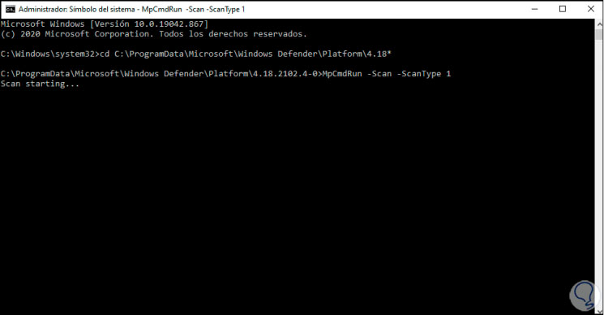
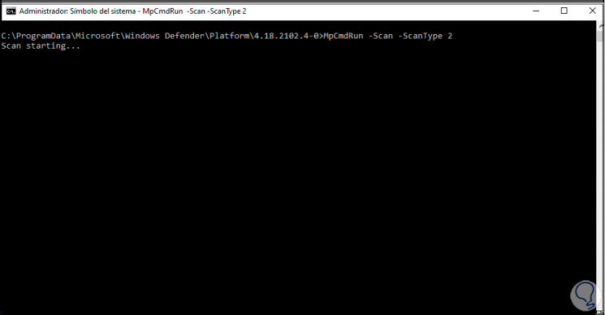
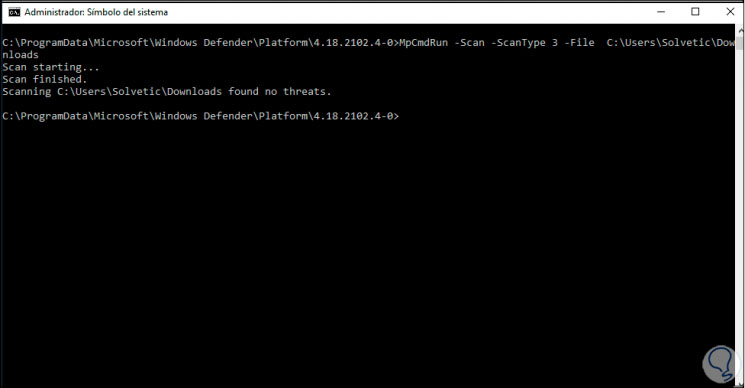
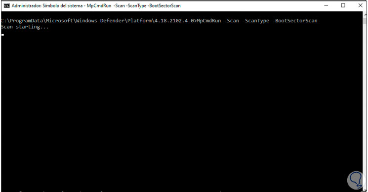
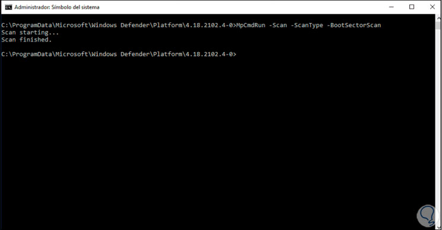
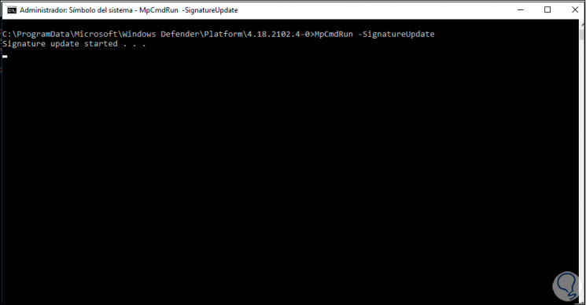
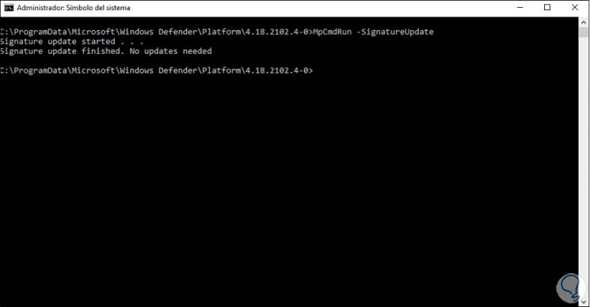
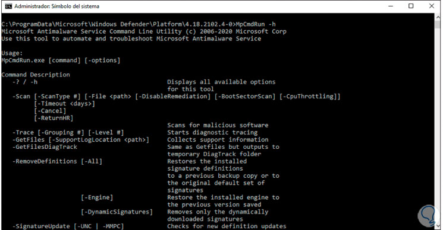

Cómo usar Windows Defender Antivirus Comandos CMD
Usar el antivirus de windows 10 por cmd
Microsoft Defender se ha integrado en Windows 10 como un componente de protección de última generación para proteger no solo los datos del usuario sino toda amenaza que ponga en riesgo la integridad del equipo y sus servicios. Windows Defender hace uso de diversos métodos de análisis, investigación detallada de las amenazas y posee una infraestructura en la nube de Microsoft para ofrecer recursividad de los elementos del usuario.
Empezando este Tutorial
- Accedemos al CMD como administradores:
- Abrimos el menú de incio de nuestro Windows y escribimos cmd
- Una vez localizado lo ejecutamos en modo administrador
- Una vez en la consola, vamos a acceder al directorio de Windows Defender ejecutando lo siguiente:
- Copiamos la siguiente ruta y la pegamos en el cmd abierto
cd C:\ProgramData\Microsoft\Windows Defender\Platform\4.18*- Los comandos para el escaneo CMD
- Escaneo Rápido
- Para ejecutar un escaneo rápido ejecutaremos la siguiente orden:
MpCmdRun -Scan -ScanType 1

- Escaneo Completo
- Para ejecutar un escaneo completo ejecutaremo:
MpCmdRun -Scan -ScanType 2

- Escaneo Personalizado
- Es posible ejecutar un escaneo personalizado, en este caso ejecutamos:
MpCmdRun -Scan -ScanType 3 -File RUTA

- Sector de Arranque del Equipo
- En el sector de arranque del equipo se aloja la información vital para que Windows 10 pueda iniciarse sin problema, en algunos escenarios es posible que en estos sectores se presenten errores, allí Windows Defender puede ayudarnos a revisar lo que sucede, para ejecutar un escaneo de los sectores de arranque ejecutamos el siguiente comando:
MpCmdRun -Scan -ScanType -BootSectorScan

- Al finalizar veremos algo similar a esto: 
- Archivos Sospechosos
- Antivirus encuentre uno o más archivos
- En caso de que Microsoft Defender Antivirus encuentre uno o más archivos sospechosos, estos serán movidos a cuarentena, este es un lugar donde se alojan los archivos sospechosos para ver su comportamiento y por lo tanto todo lo relacionado a ellos no podrá ser usado.
- Es posible que Windows Defender envíe por error un archivo a la cuarentena, si este es el caso ejecutaremos el siguiente comando para listar los archivos en cuarentena:
MpCmdRun -Restore -ListAll- Restaurar
- Luego podemos restaurar el archivo o aplicación con la siguiente sintaxis:
MpCmdRun -Restore -Name archivo.exe- Actualizar
- Para actualizar el antivirus de Windows Defender vamos a ejecutar:
MpCmdRun -SignatureUpdate

- Esto buscara si existen o no actualizaciones disponibles: 
- Ayuda
- Finalmente listamos la ayuda del comando:
MpCmdRun -h

- Con esta opción podemos llevar a cabo un análisis rápido, completo o personalizado en Windows 10 usando el antivirus de Windows Defender.
×